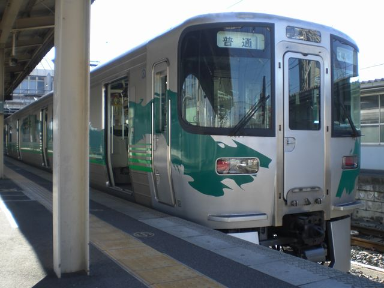
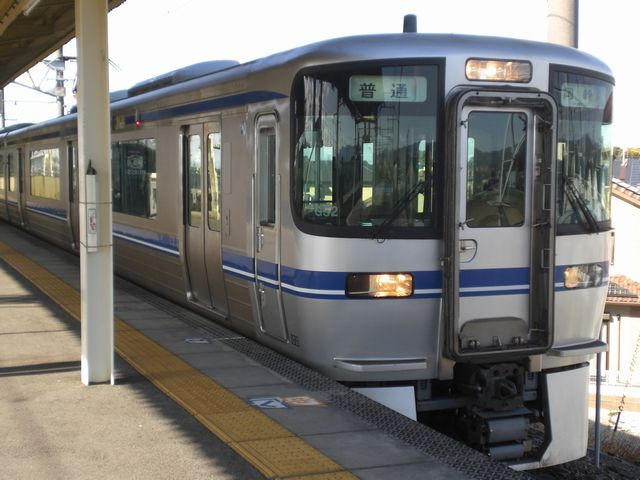
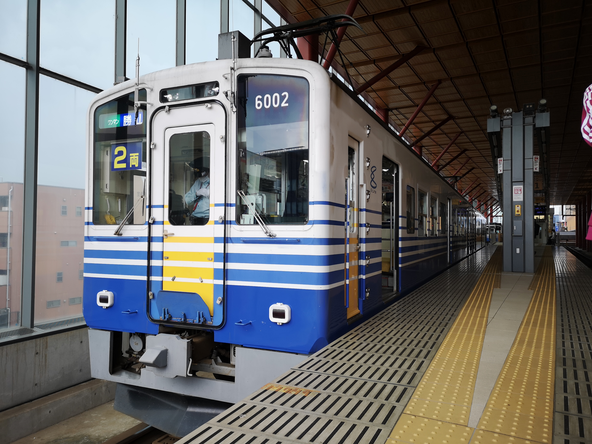
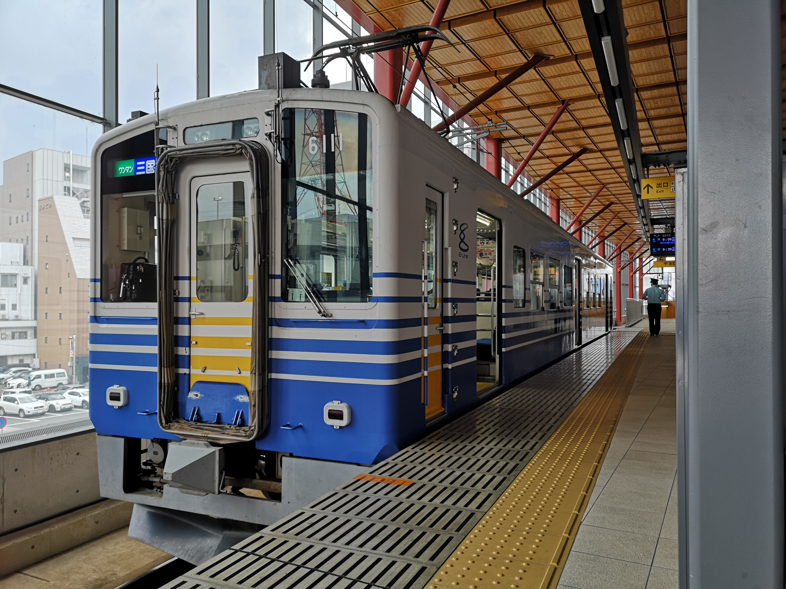

愛知環状鉄道（2024.07.02）
| 【２０００系 直流電車】（2003年3月～） | ||||
|
 |
2015.02 愛知環状線 岡崎駅 2212 普通 |
開業時から使用されていた100系を置き換える目的で、2002年に登場。 JR東海の313系と共通部品を使い製造コストを抑えているため、外装、内装において類似点が多いのが特徴。 外装のカラーリングは一般公募によって選ばれたデザインをもとにしている。太さの異なる5本の緑色の線で沿線の豊かな自然を、 左右非対称の毛筆調の帯で都市の力強さを表現した大胆なデザインである。 （2009年からロングシート車に準じた塗装に変更が開始された） | ||
|
 |
2015.02 愛知環状線 北野桝塚駅 2152 普通 |
2009年に増備された2編成は、従来のセミクロスシートからロングシートに仕様変更された。 またカラーリングも愛知環状鉄道のコーポレートカラーである青色の帯となった。 | ||
| 【１００系 直流電車】（1988年1月～2005年11月） | ||||
|
 |
2024.06 えちぜん鉄道福井駅 6001 普通 |
【100形・200形】 開業に際し導入された、車体長19m、片開き3扉セミクロスシートの車両。 車体と台車は新製だが、電装品には国鉄101系の廃車発生品が流用された。 制御電動車100形＋制御付随車200形の2両編成。最大で9本18両が在籍していた。 廃車後は全車がえちぜん鉄道に無償譲渡された。 | ||
|
 |
2024.06 えちぜん鉄道福井駅 6111 普通 |
【300形】 100形・200形の増結用、また緊急時の救援用途として5両が製造された。 内装・外装ともに基本的には100形と変わりないが、両運転台となっている。 廃車後は全車がえちぜん鉄道に無償譲渡された。 | ||